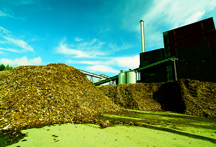

Presentamos experiencias latinoamericanas que demuestran la viabilidad de las energías renovables para cerrar brechas
sociales y económicas. Cada caso incluye aprendizajes clave que pueden replicarse en la Amazonía peruana con ajustes
culturales y técnicos.
Microred solar en Puerto Nariño, Colombia
La comunidad indígena ticuna instaló 280 paneles solares y un banco de baterías de 500 kWh para abastecer un centro
de salud y 120 viviendas. El proyecto se financió mediante un fondo rotatorio comunitario y capacitaciones
universitarias. Tras dos años de operación, la interrupción del servicio eléctrico se redujo en un 85% y se creó un
programa de formación técnica para jóvenes.
Claves del éxito:
Planificación participativa que incluyó consultas previas y talleres de diseño.
Gestión comunitaria del mantenimiento mediante brigadas mensuales.
Uso de plataformas abiertas de monitoreo para transparentar los datos de generación.
Parque eólico de Vientos Patagónicos, Chile
Este parque cuenta con 40 aerogeneradores y genera 150 MW para abastecer industrias de alimentos y viviendas rurales.
El proyecto se desarrolló con acuerdos de beneficio compartido: 2% de los ingresos anuales financian becas de
educación técnica y un programa de reforestación nativa.
Entre los aprendizajes destaca la importancia de instalar sensores para monitorear la fauna y ajustar los horarios de
operación durante épocas migratorias. Asimismo, se demuestra que los parques eólicos pueden coexistir con actividades
turísticas mediante rutas guiadas y centros de interpretación.
Biorefinería comunitaria en Pucallpa, Perú

Productores de cacao y palma implementaron una planta piloto que transforma residuos en biogás y biofertilizantes.
La iniciativa, impulsada por una alianza entre la Universidad Nacional de Ucayali y cooperativas agrarias, logró
reducir en 35% el uso de combustibles fósiles para secado de granos y mejoró los ingresos de 60 familias.
El modelo contempla contratos de abastecimiento de residuos, capacitación en seguridad industrial y un laboratorio
móvil que monitorea la calidad del biogás. También se crearon campañas para informar sobre los beneficios ambientales
del proyecto.